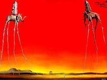
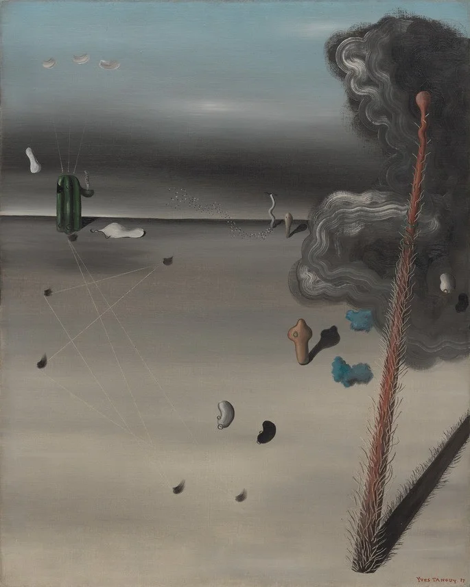

El hijo del hombre
Rene Magritte (1964)
Una interpretación común es que la pintura representa la naturaleza oculta de la identidad. La manzana oculta el rostro del hombre, lo que nos impide verlo tal como es. Esto puede interpretarse como una metáfora de la naturaleza secreta de la psique humana.

La creacion de las aves
Remedios Varo (1957)
La mujer representa a la artista, que es la creadora de las aves. Los pájaros representan la belleza, la libertad y la creatividad del mundo natural. El bosque y el cielo representan la naturaleza, que es la fuente de inspiración de la artista.

La persistencia de la memoria
Salvador Dali (1931)
Según el propio Dalí, la pintura estaba inspirada en una experiencia que tuvo mientras sufría de una fuerte migraña. En la visión, vio unos relojes derretidos en la playa. Dalí dijo que la pintura representaba la naturaleza subjetiva del tiempo, que puede ser fluido y cambiante.

Bañista sentada
Pablo Picasso (1930)
La pintura también ha sido interpretada como una representación de la visión de Picasso del mundo. Picasso era un artista que estaba interesado en explorar la naturaleza de la realidad y la percepción. La "Bañista sentada" es una obra compleja y evocadora que puede ser interpretada de muchas maneras diferentes.

Los elefantes
Salvador Dali (1948)
Los elefantes están representados con patas de araña, que les dan una apariencia frágil y desequilibrada. Están cargados con obeliscos, que representan el poder y la dominación. Esto puede interpretarse como una metáfora de la fragilidad del poder, que puede derrumbarse en cualquier momento.
La lampara filosofica
Rene Magritte (1933)
La lámpara filosófica puede interpretarse de diversas maneras. Una interpretación común es que representa la búsqueda de la verdad y la comprensión del mundo. La luz de la lámpara ilumina el camino de la verdad, y nos ayuda a comprender el mundo que nos rodea.

La hora del observatorio
Antonio lopez Garcia (1954)
La obra "La hora del observatorio" es una obra importante en la historia de la radio mexicana. Fue una obra pionera en la transmisión de noticias y música, y se convirtió en una parte familiar de la vida cotidiana de muchos mexicanos.

Paisaje catalan (El cazador)
Joan Miro (1903)
La naturaleza surrealista del mundo. La pintura es una representación surrealista de un paisaje catalán. Las formas y los colores son distorsionados y abstractos, y la realidad se mezcla con el sueño. Esto puede interpretarse como una metáfora de la naturaleza surrealista del mundo, que es a la vez bella y monstruosa.
